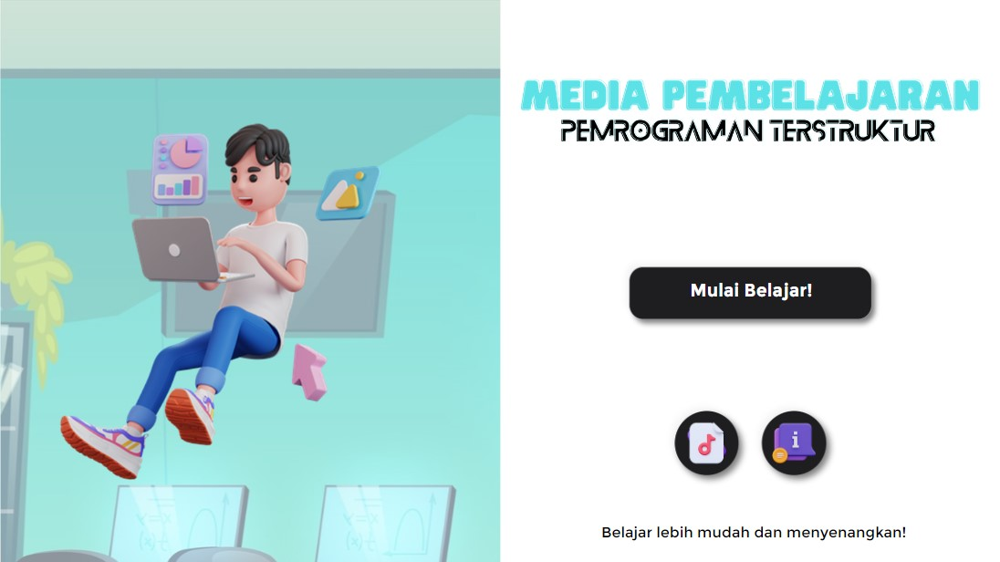
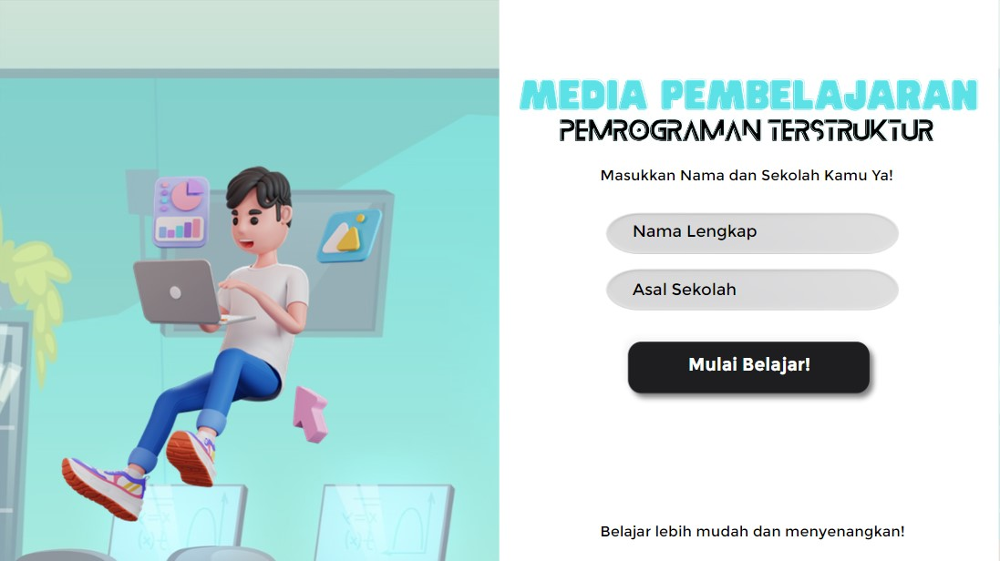
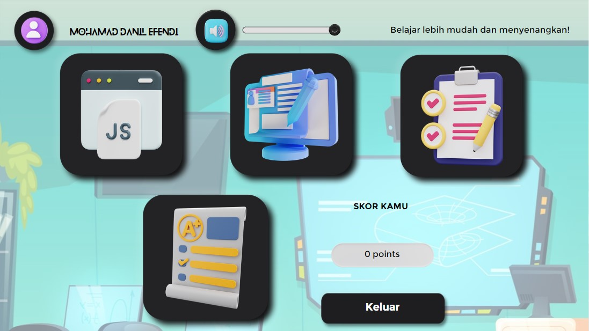
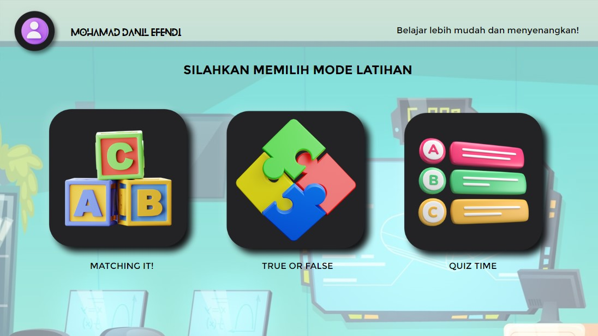

BAGAIMANA SIH TAMPILAN MEDIA PEMBELAJARANNYA?
Tampilan Media Pembelajaran

Halaman Welcome
Welcome Page
Halaman ini merupakan halaman awal, Pada halaman ini, pengguna akan memulai media pembelajaran dengan klik tombol "Mulai Belajar!".

Halaman Login
Login Page
Halaman ini merupakan halaman masuk (login). Pada halaman ini, pengguna diminta untuk memasukkan nama lengkap dan nama sekolah.

Halaman Materi
Material Menu Page
Halaman ini merupakan sub menu dari menu utama. Pada halaman ini, pengguna memulai pembelajaran dengan materi yang sudah disediakan.

Halaman Latihan
Exercise Menu Page
Halaman ini merupakan sub menu dari menu utama. Pada halaman ini, pengguna melakukan latihan soal setelah pembelajaran.